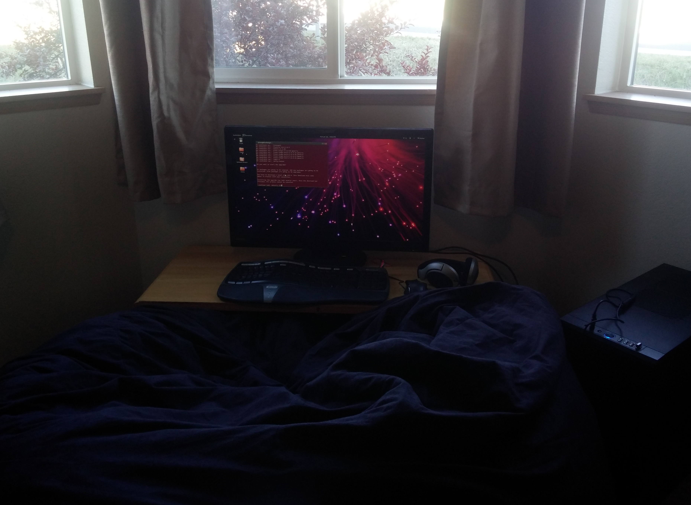

<link rel="import" href="packages/polymer/polymer.html" />
<link rel="import" href="packages/paper_elements/paper_shadow.html" />
<link rel="import" href="base_card.html" />
<polymer-element name="dkp-dev-env-prefs" noscript>
  <template>
    <link rel="stylesheet" href="dev_env_preferences.css" />
    <base-card>
      <div id="other-content">
        <h1>Development Environment</h1>

        <div id="desktop-pic" class="center">
          <paper-shadow id="desktop-pic-shadow" class="fill"></paper-shadow>
          
        </div>
        <p>
          As inspired by
          <a href="http://usesthis.com/" target="_blank">usesthis.com</a>
        </p>

        <h2>Hardware</h2>
        <p>
          Hardware wise, I keep it cheap. My primary on the go device is a
          <a href="http://www.amazon.com/Toshiba-CB35-B3340-13-3-Inch-Chromebook-Full-HD/dp/B00N99FXIS"
             target="_blank">
            13" Toshiba Chromebook 2</a>.
          I love Chromebooks. They're cheap machines,
          no frills, and run Linux like a boss. This one has a rather beautiful
          1080p IPS display. It's a little underpowered, but that's
          why I have a desktop. The point is, I can get all day battery life
          from this little guy.
        </p>
        <p>
          My custom built desktop for getting the tough work done features
          an Intel i5 Haswell CPU and a
          Nvidia 760 GPU with a 250GB SSD and spinning disks for extra space.
          The system physically
          <a href="http://www.fractal-design.com/home/product/cases/define-series/define-r4-black-pearl"
             target="_blank">
            looks non-descript</a>,
          is completely silent, and does
          everything I need it to with plenty of power to spare. A nice thing
          about building my own desktop is that it's possible to build it in
          bits and pieces as I get funds. For awhile, it didn't even have the
          SSD or GPU. Connected to my desktop is a
          <a href="http://www.engadget.com/products/planar/px2710mw/"
             target="_blank">
            27" 1080p monitor by Planar</a>,
          an excellent pair of
          <a href="http://www.engadget.com/products/sennheiser/hd/555/"
             target="_blank">
            Sennheiser HD555</a>
          headphones which are great for around the house because they let in
          ambient noise, a
          <a href="http://www.amazon.com/Logitech-Wireless-Performance-Mouse-Mac/dp/B002HWRJBM"
             target="_blank">
            Logitech Performance MX</a>,
          and a rather terrible
          <a href="http://www.amazon.com/Microsoft-Natural-Ergonomic-Keyboard-4000/dp/B000A6PPOK/"
              target="_blank">
            Microsoft Ergo 4000</a>
          keyboard that I got from Goodwill for $5 (lol). Oh yeah, I also prefer
          sitting near the ground in a
          <a href="http://www.amazon.com/gp/product/B0055DXLVW"
             target="_blank">
            bean bag chair</a>.
          It's super comfy, which helps for long coding sessions.
        </p>
        <p>
          The smallest device in the family is my LG G2. I like Nexus devices,
          but when the choice came between a 2300mAh battery versus a
          3000mAh battery, the G2 won out. A dead phone is a useless phone and
          this phone has never ran out of juice on me.
        </p>

        <h2>Software</h2>
        <p>
          On the software side, I prefer Linux. Everything from my little MIPS
          powered Netgear router, to my desktop runs Linux.
          Windows generates a flurry of
          curse words from my mouth, and macbooks are too expensive for me to
          have tried
          OS X for any length of time. I even have a cool script
          that can get a Linux system quickly configured to my liking -- it's not
          open sourced, sorry. --
          Ubuntu is my distro of choice simply
          because it's very stable and, generally, everyone who makes a piece of
          software for Linux has a debian package somewhere. A lot of people make
          distro decisions based upon the default window manager...which is
          idiotic. Don't like Unity? Install something else.
          My something else is
          <a href="http://awesome.naquadah.org/">Awesome</a>.
          It does the job and tiling window
          managers are the best for productivity.
        </p>
        <p>
          I'm also an IDE person. I get a
          lot of flack for it, but nothing beats a good IDE like
          <a href="https://www.jetbrains.com/idea/" target="_blank">
            Intellij's IDEA Ultimate</a>. What I love about it is that I
          can be productive in any
          development stack with the installation of a few plugins. Plus,
          it's highly configurable so I can turn off the annoying bits that VIM
          lovers like to bash terrible IDE's, like Eclipse, for.
        </p>
        <p>
          Chrome is my browser of choice, and for
          any sort of generic office productivity task, Google apps are where I
          go. As good as Microsoft Office is, it doesn't work on Linux, the web
          version is weak compared to the standard version, and it
          sucks for collaborating with a group of people. With Google, I have
          access anywhere a browser exists...which is literally everywhere.
        </p>
      </div>
    </base-card>
  </template>
</polymer-element>
